Universidad de San Carlos de Guatemala · FIUSAC · Redes de Computadoras 1 · 2S 2026
Rediseño de la infraestructura en Capa 1 y Capa 2. De una red plana a un campus jerárquico, segmentado y redundante — con cada decisión justificada y medida en el simulador.
El encargo · qué pedía el enunciado
| Área | Lo que exige el enunciado |
|---|---|
| Centro de Datos | VTP Server del dominio · granja de ≥ 4 servidores con enlace redundante de alto tráfico |
| Centro de I+D | ≥ 3 switches donde la caída de uno no aísle a los demás · el trunk de mayor ancho de banda del campus · ≥ 8 equipos |
| Ed. Corporativo | Dos alas con conectividad entre sí · Áreas Comunes con visitantes aislados · AP inalámbrico |
| Planta | Hub Legacy conservado con las máquinas industriales, y su impacto documentado |
Los parámetros no son decisión de diseño: salen del carné 201905884 y un ID mal puesto penaliza del 50 % al 100 %.
| Parámetro | Valor aplicado |
|---|---|
| VLANs (X = 4) | 14 · 24 · 34 · 44 · 54 |
| VLAN nativa | 94 |
| Dominio VTP (# = 8) | Smart_8 |
| Agregación (par) | LACP |
| Spanning Tree (par) | PVST+ |
| Banner MOTD | TechPark_201905884 |
Punto de partida · la red actual
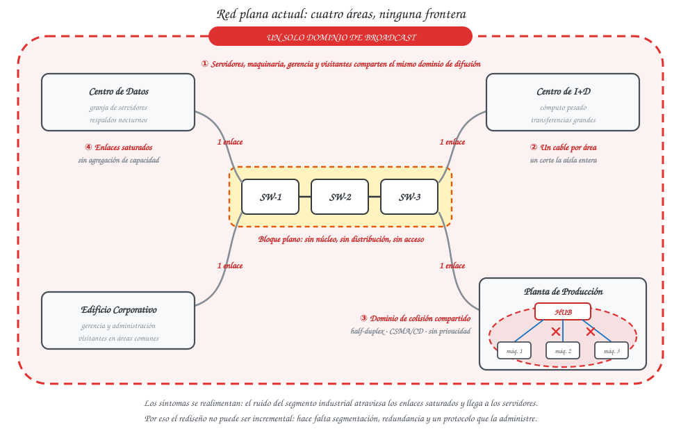
| Síntoma en el campus | Causa en Capa 1/2 | Lo resuelve |
|---|---|---|
| Tráfico administrativo mezclado con el de visitantes | Un solo dominio de broadcast | VLANs |
| Colisiones continuas en el segmento industrial | Hub: dominio de colisión compartido | Switch + contención |
| Enlaces saturados a servidores e I+D | Un solo enlace físico por trunk | EtherChannel |
| Caída total ante la falla de un cable | Rutas únicas, sin redundancia | Redundancia + STP |
| VLANs inconsistentes entre switches | Administración manual por equipo | VTP |
Y los síntomas se realimentan: el ruido del segmento Legacy no se queda en la Planta — cruza los enlaces saturados y llega a los servidores.
Una red plana no es una red mal cableada: es una red sin fronteras.
Por eso el rediseño no fue incremental: introduce dos fronteras que no existían —la VLAN en Capa 2 y la jerarquía en la topología— y administra la redundancia que antes no se podía tener.
La decisión estructural · §11
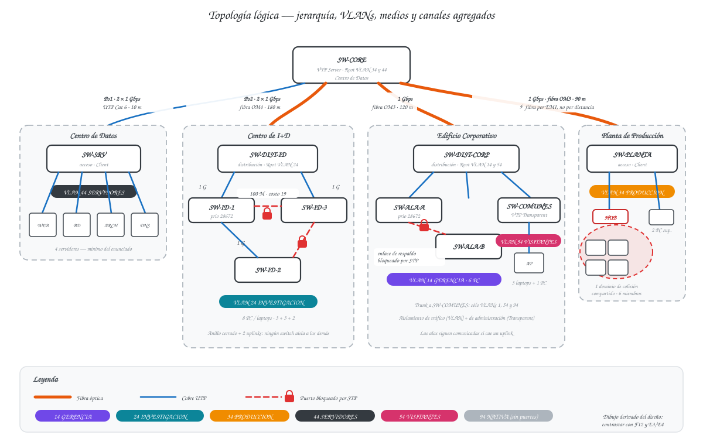
| Nivel | Qué hace | Qué NO hace |
|---|---|---|
| Core SW-CORE | Conmuta entre edificios; concentra los 4 trunks; es el VTP Server | Ni una sola PC cuelga de él |
| Distribución DIST-ID · DIST-CORP | Agrega su edificio y presenta un solo enlace al Core | No conecta equipos finales |
| Acceso 8 switches | PCs, servidores, AP y hub; aquí viven los puertos access | No administra VLANs (son VTP Client) |
Implementación en Packet Tracer · §12
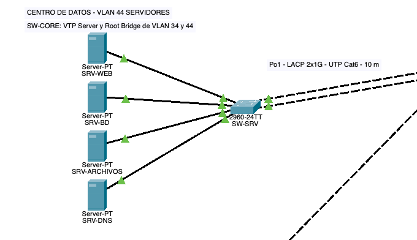
CENTRO DE DATOS · 4 servidores · Po1
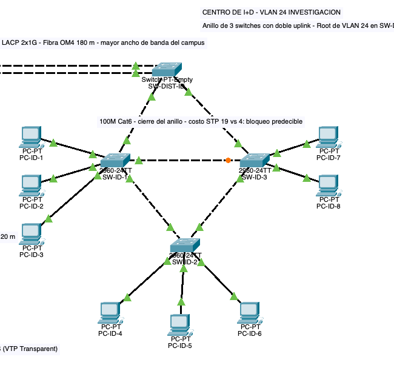
I+D · anillo de 3 + 2 uplinks · Po2
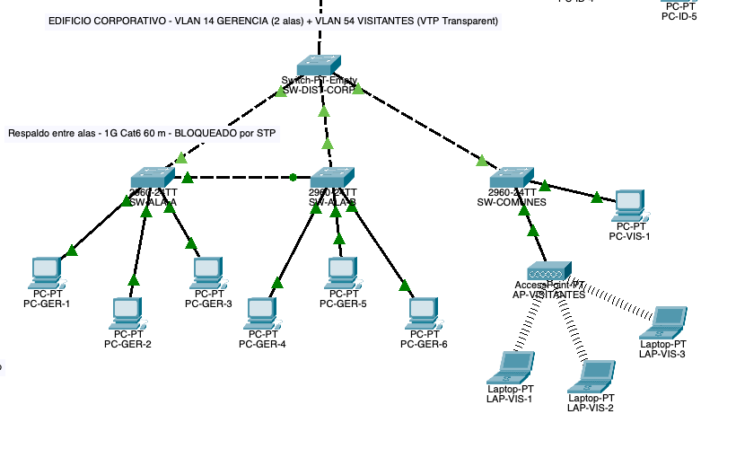
CORPORATIVO · triángulo de alas + AP
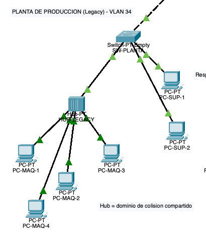
PLANTA · hub Legacy acotado
Tres formas conviviendo, cada una por un motivo distinto: estrella jerárquica en el campus, anillo en I+D porque la caída de un switch no debe aislar a los otros, y triángulo en el Corporativo porque las alas deben hablarse aunque caiga el distribuidor.
Segmentación lógica · §13, §15, §16
| VLAN | Nombre | Dónde | Equipos |
|---|---|---|---|
| 14 | GERENCIA | Corporativo (2 alas) | 6 PC |
| 24 | INVESTIGACION | Centro de I+D | 8 PC |
| 34 | PRODUCCION | Planta | 4 máq. + 2 sup. |
| 44 | SERVIDORES | Centro de Datos | 4 servidores |
| 54 | VISITANTES | Áreas Comunes | 3 laptops + 1 PC |
| 94 | NATIVA | Todos los trunks | Ninguno, a propósito |
| 999 | SIN-USO | Puertos apagados | Ninguno |
La 94 se deja vacía porque la VLAN nativa viaja sin etiqueta: sin puertos de acceso en ella, el VLAN hopping por doble etiquetado se queda sin vector.
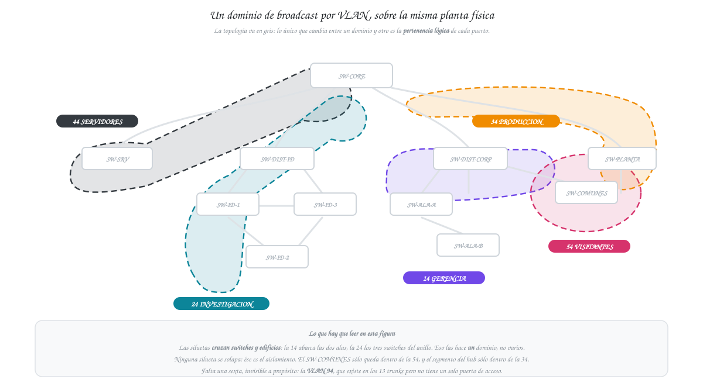
Administración centralizada · §17
| Modo | Switches | Por qué |
|---|---|---|
| Server | SW-CORE | Único punto por donde pasan los 4 trunks: un anuncio llega a los 3 edificios en un salto |
| Client | los otros 9 | Reciben VLANs, no las crean: menos riesgo de desincronizar el dominio |
| Transparent | SW-COMUNES | Aislamiento de administración: ni siquiera conoce las VLANs 14, 24, 34 y 44 |
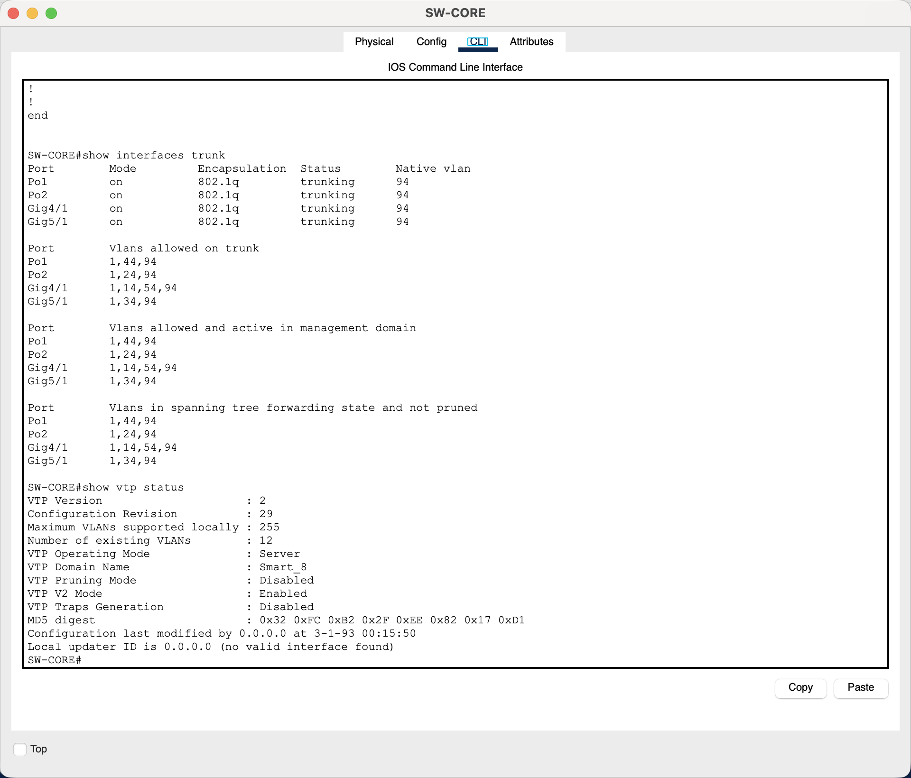
E1 — Server · dominio Smart_8 · versión 2 · revisión 29
Medido en los 11 switches: los 9 Client comparten la revisión 29 con el Server — el dominio está sincronizado — y SW-COMUNES está en 0, porque un Transparent reenvía los anuncios sin aplicarlos. La prueba de fondo: SW-ALA-A tiene las 7 VLANs sin que se creara ninguna ahí.
Prevención de bucles · §18
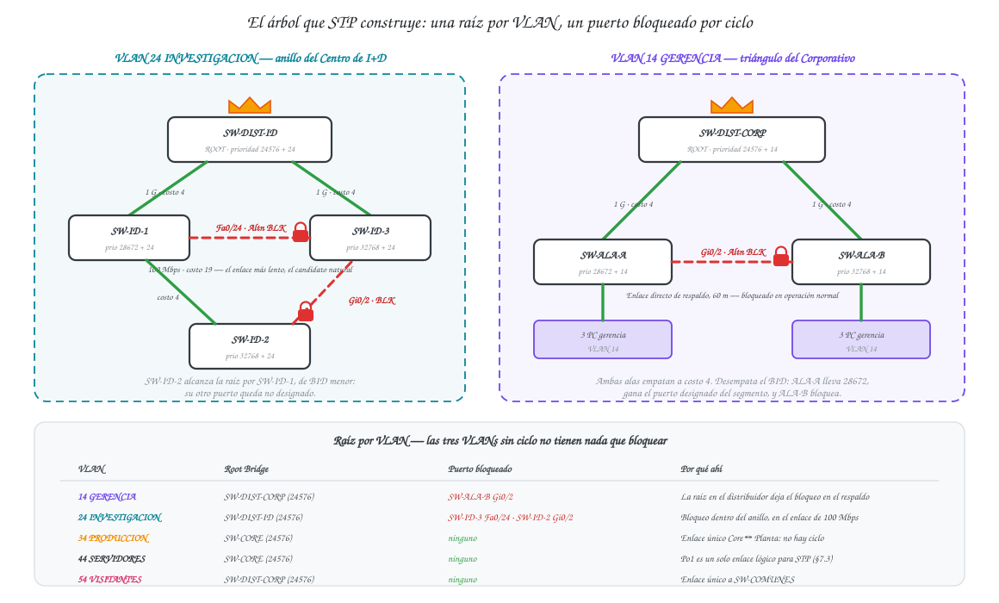
| VLAN | Root Bridge | Por qué ahí |
|---|---|---|
| 14 · 54 | SW-DIST-CORP | El bloqueo cae en el enlace Ala A ↔ Ala B, que debe ser solo respaldo |
| 24 | SW-DIST-ID | El bloqueo cae dentro del anillo de I+D, no en un uplink |
| 34 · 44 | SW-CORE | No hay ciclo; se fija igual para que el resultado sea determinista |
STP bloquea el puerto más lejano a la raíz. Poniendo la raíz en el distribuidor de cada edificio, lo bloqueado es el enlace de respaldo y no un uplink de uso diario.
Detalle fino: el cierre del anillo va a 100 Mbps a propósito — costo STP 19 frente a 4, así que es el candidato natural al bloqueo. Predecible, no accidental.
Medido (E3/E4): las 5 raíces y los 3 puertos bloqueados coinciden exactamente con lo documentado — SW-ALA-B Gi0/2 BLK 4 · SW-ID-3 Fa0/24 BLK 19 · SW-ID-2 Gi0/2 BLK 4.
Redundancia y agregación no son lo mismo.
Donde hacía falta capacidad se usó EtherChannel: los enlaces trabajan a la vez. Donde hacía falta un camino alterno se usó STP: el enlace está bloqueado hasta que hace falta. Confundirlas lleva a bloquear enlaces que debían sumar, o a crear bucles donde solo hacía falta un respaldo.
Agregación de enlaces · §19
| Canal | Extremos | Medio y capacidad | Propósito |
|---|---|---|---|
| Po1 | SW-CORE ↔ SW-SRV | UTP Cat 6 · 2 × 1 Gbps | Enlace de alto tráfico a la granja de servidores |
| Po2 | SW-CORE ↔ SW-DIST-ID | Fibra OM4 · 2 × 1 Gbps | Trunk de mayor ancho de banda del campus |
Para STP, un Port-channel es un solo enlace lógico. Por eso no hay bucle que bloquear… y por eso perder un miembro no dispara reconvergencia.
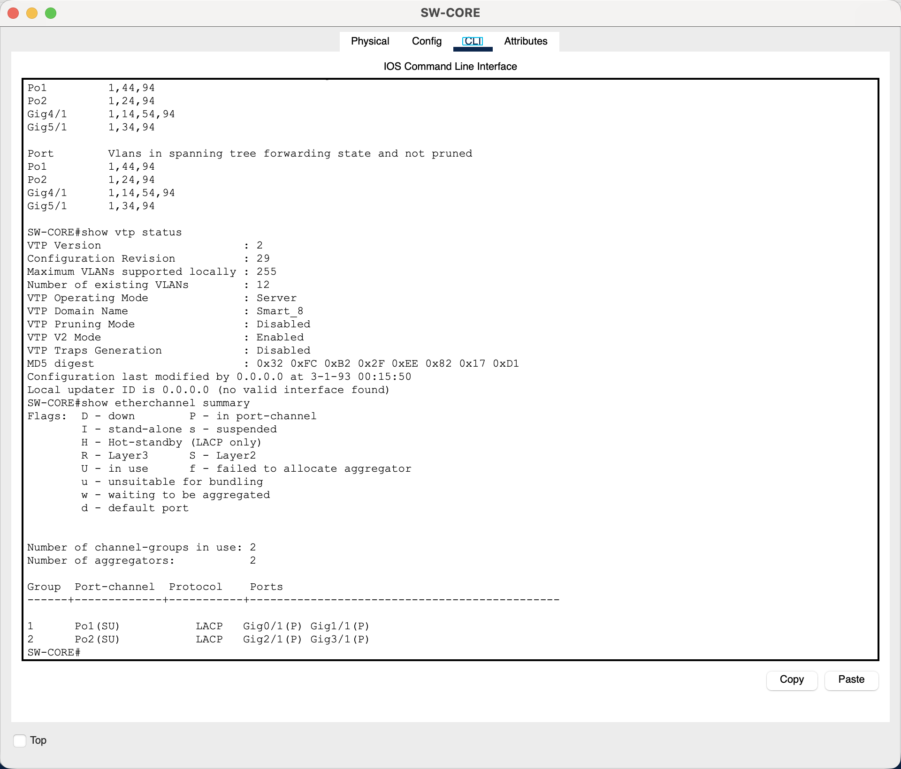
E5 — Po1(SU) y Po2(SU): S = Capa 2, U = en uso. Los cuatro miembros en (P), ninguno en (I).
Capa 1 · medios de transmisión · §20
| Enlace | Medio | Dist. | Criterio que decide |
|---|---|---|---|
| Core ↔ I+D (Po2) | Fibra OM4 | 180 m | 1 — Distancia: fuera del alcance del cobre |
| Core ↔ Corporativo | Fibra OM3 | 120 m | 1 — Distancia: también excede los 100 m |
| Core ↔ Planta | Fibra OM3 | 90 m | 3 — Inmunidad a EMI, no distancia |
| Core ↔ SW-SRV (Po1) | UTP Cat 6 | 10 m | 4 — Costo: fibra aquí sería pagar transceptores sin ganancia |
Los cuatro criterios se aplican en orden de descarte: distancia → ancho de banda → interferencia → costo.
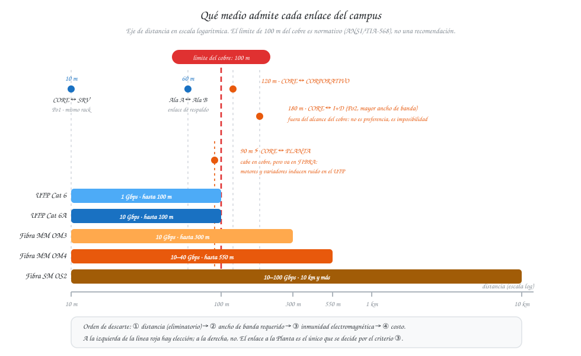
Seguridad de Capa 2 · §22
| Medida aplicada | Qué mitiga | Lo que no resuelve |
|---|---|---|
| VLAN nativa 94 sin puertos de acceso | VLAN hopping por doble etiquetado | Nada, si se deja un puerto de acceso en la 94 |
| port-security máx. 5 · restrict · sticky | MAC flooding y equipos no autorizados en el hub | La MAC es falsificable |
| storm-control broadcast level 20 | Tormentas del segmento Legacy | No elimina la colisión: eso solo se logra quitando el hub |
| allowed vlan restringida por trunk | Que un trunk transporte lo que no le corresponde | — |
| PortFast + BPDU Guard en 21 puertos de PC y servidores | Que un equipo final inyecte BPDUs y altere el árbol | — |
| Banner MOTD Acceso Restringido - TechPark_201905884 | Respaldo legal del acceso | No impide el acceso, solo advierte |
| Puertos no usados → VLAN 999 + shutdown | Conexión oportunista en un puerto libre | — |
El aislamiento de visitantes es triple y es de Capa 2: VLAN 54 separada + VTP Transparent + trunk allowed 1,54,94. Impide que un visitante alcance las VLANs internas — pero dentro de la 54 sí se ven entre ellos, porque no hay Capa 3 ni ACL. Declararlo es más honesto que presentarlo como aislamiento total.
Verificación · §24
Las dos redundancias del diseño, contrastadas en el simulador: ~30–50 s con STP frente a recuperación inmediata con LACP.
Prueba de tolerancia F-1 · §24.2
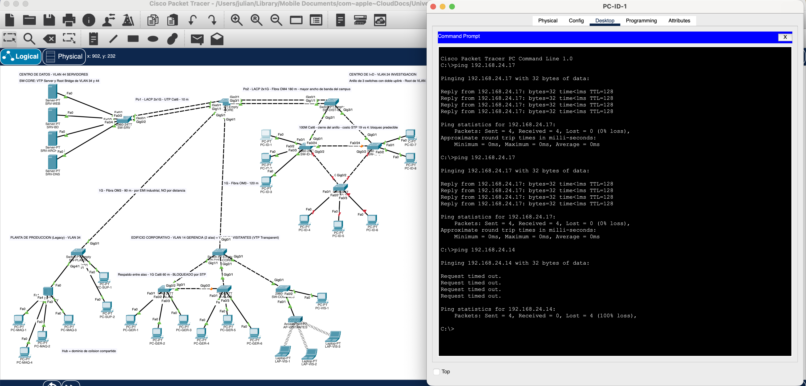
E12 — PC-ID-1 → PC-ID-7 con SW-ID-2 apagado.
| Momento | Resultado |
|---|---|
| Antes | 0 % de pérdida |
| Con SW-ID-2 apagado | 0 % de pérdida |
Estimado en el diseño: 30–50 s de convergencia. Medido: interrupción nula.
Regla de trabajo del proyecto: cuando el simulador contradice al documento, manda el simulador. Se corrigió el manual, no la medición.
Cierre · §27
Y lo que queda pendiente, con nombre y apellido: sustituir el hub (lo prohíbe el enunciado) · Rapid-PVST+ en lugar de PVST+ (lo fija el carné) · acceso de gestión con contraseñas y SSH — hoy el banner advierte, pero no impide · routing inter-VLAN con ACL, fuera del alcance de Capa 1 y 2.
Cuando el simulador contradice al documento, manda el simulador.
Gracias. Quedan los anexos con las salidas completas para las preguntas.
ANEXOS · PARA PREGUNTAS
Topología en el simulador · raíces y bloqueos medidos · direccionamiento de pruebas
Anexo A · la topología en Packet Tracer
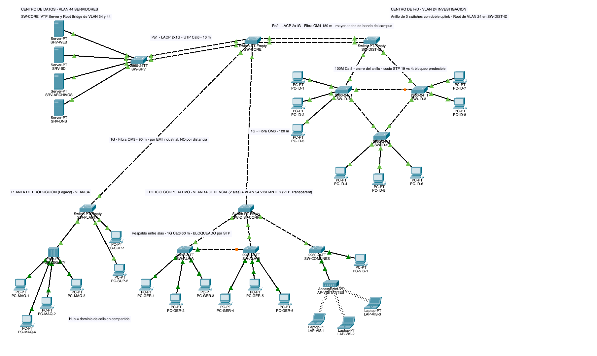
11 switches · 1 hub · 1 AP · 4 servidores · 24 equipos finales · 17 enlaces entre switches · archivo Proyecto1_201905884.pkt
Anexo B · STP medido, VLAN por VLAN
| VLAN | Root medido | ID de prioridad |
|---|---|---|
| 14 | SW-DIST-CORP | 24590 |
| 24 | SW-DIST-ID | 24600 |
| 34 | SW-CORE | 24610 |
| 44 | SW-CORE | 24620 |
| 54 | SW-DIST-CORP | 24630 |
| VLAN | Puerto bloqueado | Costo |
|---|---|---|
| 14 | SW-ALA-B Gi0/2 Altn BLK | 4 |
| 24 | SW-ID-3 Fa0/24 Altn BLK | 19 |
| 24 | SW-ID-2 Gi0/2 Altn BLK | 4 |
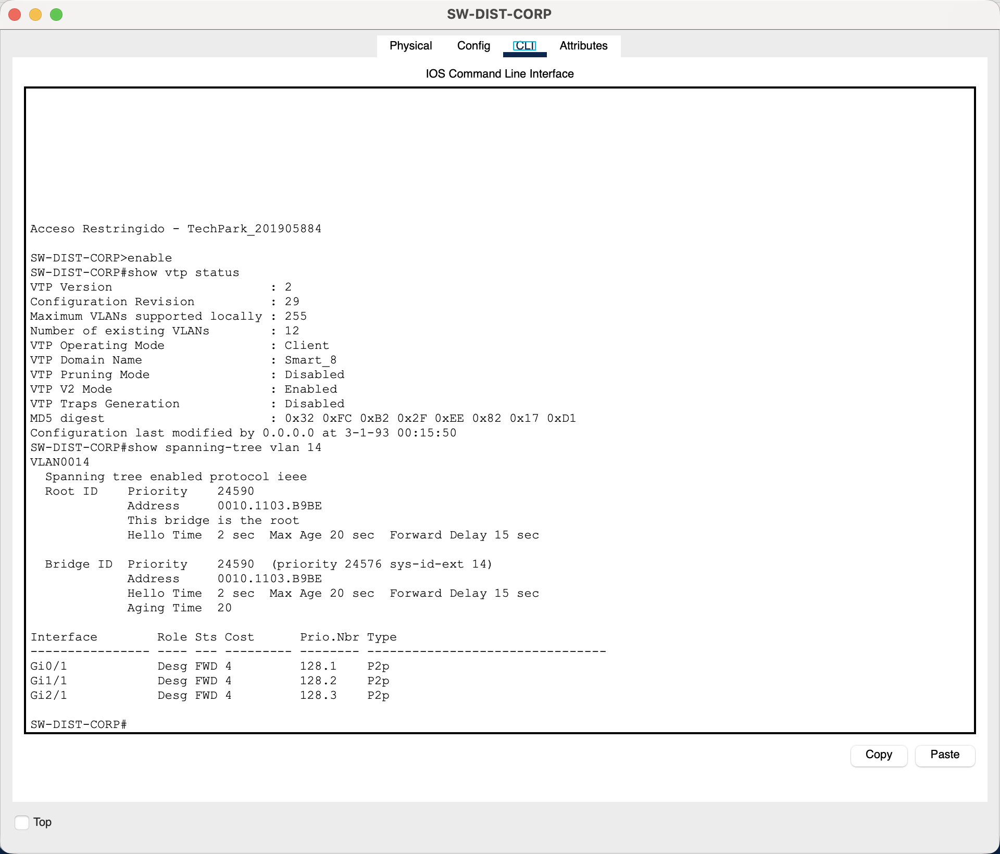
E3 — This bridge is the root para la VLAN 14 en SW-DIST-CORP.
Las cinco raíces y los tres bloqueos coinciden con §18 del manual. Sin prioridades fijadas, el desempate habría dependido de qué MAC salió más baja.
Anexo C · direccionamiento y resultados
| VLAN | Red asignada para probar |
|---|---|
| 14 | 192.168.14.0/24 |
| 24 | 192.168.24.0/24 |
| 34 | 192.168.34.0/24 |
| 44 | 192.168.44.0/24 |
| 54 | 192.168.54.0/24 |
El proyecto es de Capa 2 pura: el direccionamiento se asignó solo para poder hacer ping, sin gateway y sin router. Eso es justamente lo que hace que E10 y E11 fallen, que es el resultado correcto.
| Ev. | Prueba | Resultado medido |
|---|---|---|
| E9 | Ping intra-VLAN entre switches distintos | 0 % pérdida |
| E10 | Ping inter-VLAN (14 → 44) | 100 % — correcto |
| E11 | Visitante (54) → servidor (44) | 100 % — correcto |
| E12 | Caída de SW-ID-2 | Interrupción nula |
| E13 | Caída del uplink del Ala B | 100 → 50 → 0 % |
| E14 | Caída de un miembro de Po1 | Canal up, sin reconvergencia |
Estado final verificado: tras las tres fallas, los 11 switches quedaron con la misma configuración, las mismas raíces, los mismos puertos bloqueados y los dos canales en (SU).